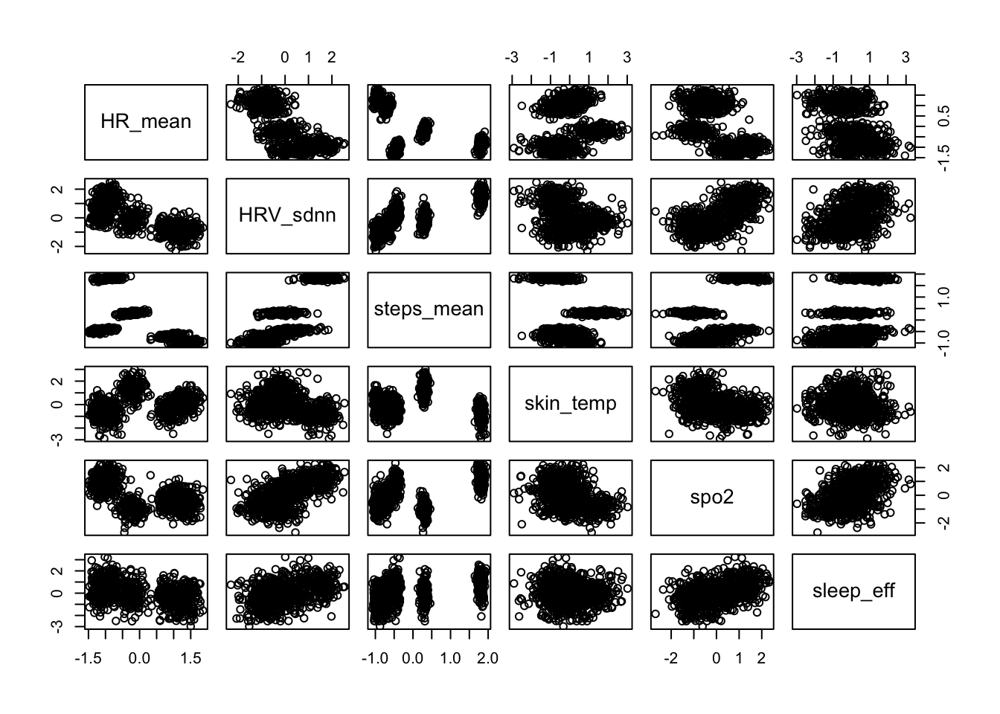
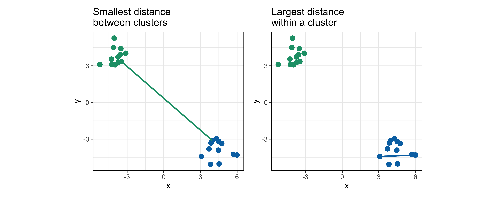
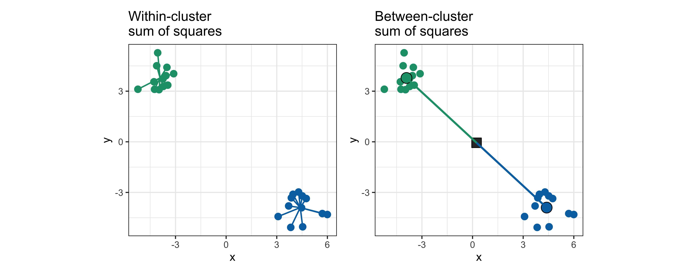
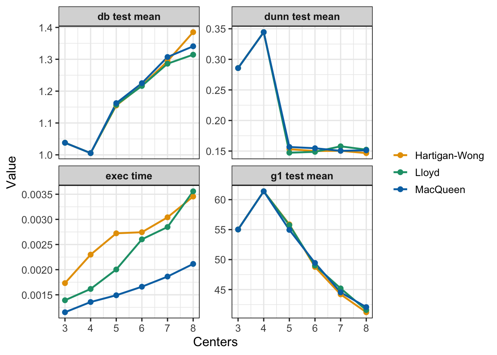
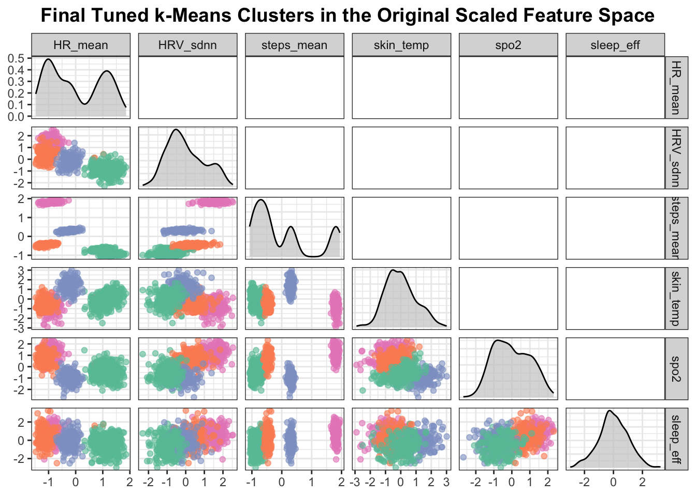
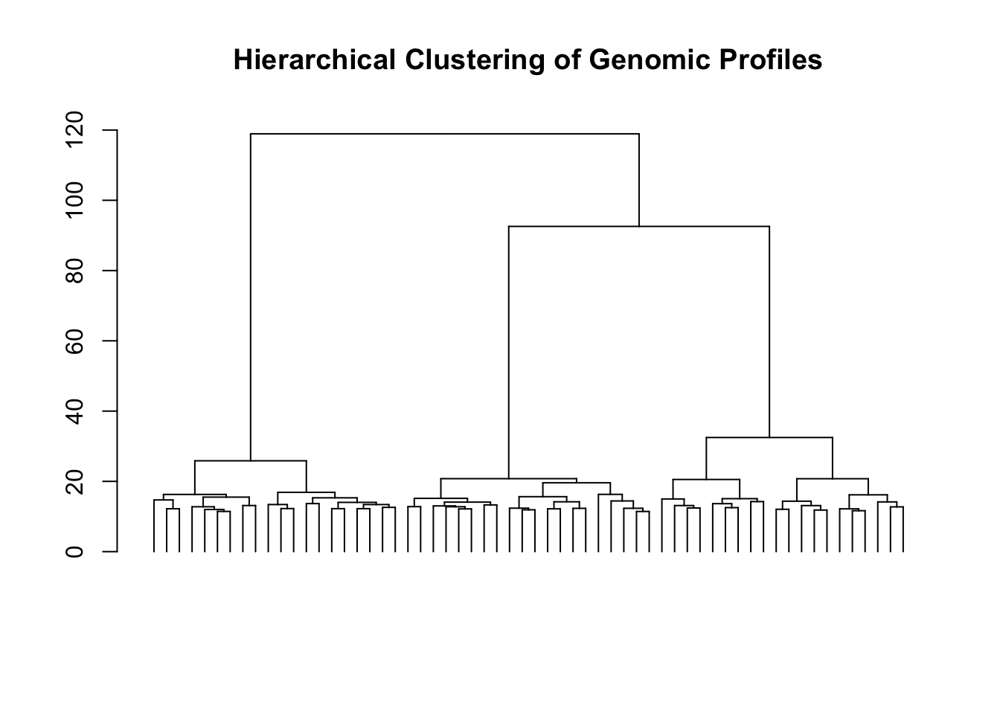

In modern healthcare, wearable devices continuously record physiological signals that reflect an individual’s health state far more dynamically than traditional clinical measurements. Our dataset contains observations from hundreds of individuals wearing a smartwatch that records resting heart rate, heart-rate variability, step counts, skin temperature, oxygen saturation, and sleep efficiency. These variables capture multiple dimensions of physiological regulation, including autonomic balance, behavioural activity, metabolic stress, respiratory adequacy, and restorative capacity. Although the dataset was simulated for pedagogical purposes, it mirrors the complexity found in real-world remote-monitoring programs, where clinicians frequently must interpret large amounts of sensor data without explicit labels. The relationships between these variables are often nonlinear and vary across individuals, making manual inspection insufficient for detecting underlying physiological patterns.
Clustering provides a principled way to uncover these latent structures. By grouping individuals with similar physiological profiles, clustering can reveal meaningful digital phenotypes such as “healthy active,” “high stress,” “sedentary stable,” “subclinical fever,” or “post-operative recovery” patterns. These groups may help answer practical questions that arise in digital health: Who appears to be at elevated physiological stress? Which patients may be showing early signs of infection? What subpopulations would benefit from targeted behavioural interventions, such as activity coaching or sleep optimization? Rather than relying on predefined clinical categories, clustering lets the data speak for itself, highlighting naturally occurring physiological states. Throughout this chapter, we will use this wearable dataset to illustrate how different clustering algorithms operate and how they can support decision making in remote healthcare settings.
We begin by exploring the raw dataset and understanding the physiological variables it contains, establishing the context in which clustering is applied. The chapter then progresses through four major clustering paradigms—k-means, hierarchical clustering, density-based methods, and model-based mixture clustering—showing how each algorithm interprets the same dataset differently. For every method, we examine how clusters are formed, how to choose key hyperparameters, how to evaluate the resulting partitions, and how to interpret the physiological meaning of the groups identified. By revisiting the same dataset across multiple techniques, the chapter emphasizes the comparative strengths and limitations of each method and illustrates how clustering contributes to real-world questions in digital health monitoring.
# ------------------------------------------------------------# Basic exploration# ------------------------------------------------------------wear <-readRDS("~/att_ai_ml/att_book/data/wearable_cluster.rds")# Preview the first rows of the unscaled datasethead(wear)
'data.frame': 800 obs. of 6 variables:
$ HR_mean : num 62.8 62.6 58 55.2 61.5 ...
$ HRV_sdnn : num 80.9 94.3 77.9 77 72.7 ...
$ steps_mean: num 11861 11992 11827 11715 11917 ...
$ skin_temp : num 33.7 32.2 32.1 31.8 32.3 ...
$ spo2 : num 98.1 98.1 98.7 97.8 97.8 ...
$ sleep_eff : num 0.949 0.922 1.135 0.945 1.005 ...
8.2 Clustering with k-means
k-means is one of the oldest and most influential methods for discovering structure in multivariate data. Its central idea is remarkably direct: if groups exist in the data, then there should be representative “centers” around which observations naturally cluster. In the context of our wearable-health dataset, these centers correspond to typical physiological patterns—for example, a pattern representing highly active and well-regulated individuals, another capturing people experiencing sustained sympathetic stress, or a pattern consistent with early inflammatory responses. By learning these centers directly from the data, k-means helps us transform a cloud of sensor measurements into meaningful physiological phenotypes.
k-means clustering attempts to partition the data into a fixed number of groups, denoted by k such that individuals within the same group are more similar to one another than to members of other groups. It accomplishes this by iteratively performing two steps. First, it assigns each observation to the center it is closest to in the multivariate space defined by our wearable features. Second, it recalculates each center as the average of the observations assigned to it. Repeating this assignment–update cycle gradually stabilizes the centers until the clusters stop changing significantly. When applied to our physiological measurements, this process naturally separates individuals with low resting heart rate and high activity from those with high temperature and reduced oxygen saturation or from those with extremely low activity and increased heart rate.
Several strategies exist for carrying out these updates, each offering different computational and statistical trade-offs. A classic formulation alternates between recomputing centers and reassigning points until convergence, providing a straightforward and intuitive procedure. Online variants update the centers incrementally as each observation is processed, which can be useful for streaming data from wearable devices. More refined approaches examine whether reassigning individual points between clusters would reduce overall within-cluster variation, often producing cleaner and more compact partitions. Regardless of the variant, all approaches pursue the same objective: to find a configuration of k centers that best summarizes the structure present in the data.
8.2.1 Lloyds algorithm
Lloyd’s algorithm is perhaps the most intuitive formulation of k-means clustering and is commonly used to introduce the method. To illustrate how it works, consider a simple two-dimensional toy dataset with three roughly separable groups. The algorithm begins by selecting a value for k and placing k temporary centroids at random positions in the feature space. Each observation is then assigned to the centroid it is closest to, and the centroids are updated to the mean of the observations assigned to them.
This iterative procedure can be understood geometrically through the notion of Voronoi regions. Given a set of centroids, the feature space can be partitioned into polygonal areas—one for each centroid—such that every point inside a region is closer to that region’s centroid than to any of the others. These regions form what is known as a Voronoi diagram. In the context of k-means, each region corresponds to the set of observations that would currently be assigned to a particular centroid. During the assignment step, each observation effectively “chooses” the Voronoi region it falls into. During the update step, the centroid of each region moves to the average location of the points assigned to it, which in turn reshapes the Voronoi boundaries. Iteration after iteration, the diagram adjusts as the centroids drift toward more stable positions, and convergence occurs precisely when the Voronoi regions stop changing from one iteration to the next.
Conceptually, Lloyd’s algorithm follows these steps:
1. Choose the number of clusters \(\mathbf{k}\).
2. Randomly initialize \(\mathbf{k}\) centroids in the space.
3. Assignment step: for each observation a. compute its distance to each centroid, b. assign it to the nearest centroid.
4. Update step: move each centroid to the mean of the observations assigned to it.
5. Repeat the assignment and update steps until no observations change cluster or a specified iteration limit is reached.
During the early iterations the centroids often move substantially because the initial configuration is arbitrary. As the Voronoi cells begin to align with the natural structure in the data, the updates become progressively smaller. Eventually, a point is no longer reassigned to a different cell, and the algorithm converges. Because the initial centroids are chosen at random, different runs may converge to different solutions; it is therefore common practice to repeat the algorithm several times and select the configuration with the lowest within-cluster variation.
The progression of Lloyd’s algorithm can be seen clearly in the sequence of plots in ?fig-lloyd. Because the initial centroids are placed near the center of the feature space, the first iteration produces assignments that bear little resemblance to the true structure of the data. As the algorithm alternates between reassigning points and recomputing the centroids, the centers begin to migrate rapidly toward regions of high data density. The early iterations display large corrective movements, reflecting the substantial changes in cluster membership. By the third iteration, the centroids have almost reached the natural cluster cores, and subsequent adjustments become minor. This gradual stabilization exemplifies the convergence behavior of Lloyd’s method: rapid shifts at the start, followed by increasingly smaller refinements as the clusters crystallize around their final positions.
The following code illustrates the behaviour of the clustering algorithm.
# ============================================================# FULL SCRIPT: Lloyd’s Algorithm with Voronoi Visualization# Harder clustering example: clusters not well separated# ============================================================library(tidyverse)library(deldir)library(ggplot2)library(patchwork)set.seed(2025)# ------------------------------------------------------------# 1. HARDER TOY DATASET (Clusters overlap on purpose)# ------------------------------------------------------------toy <-tibble(x =c(rnorm(20, 50, 6), # cluster Arnorm(20, 58, 6), # cluster Brnorm(20, 54, 6)), # cluster Cy =c(rnorm(20, 55, 6),rnorm(20, 50, 6),rnorm(20, 60, 6)),cluster_true =rep(c("A","B","C"), each =20))# Initial centroids near each other and poorly placedinit_centers <-tibble(x =c(52, 56, 54),y =c(58, 52, 48))# ------------------------------------------------------------# 2. Voronoi polygon helper# ------------------------------------------------------------voronoi_polygons <-function(centers) { v <-deldir(centers$x, centers$y) tiles <-tile.list(v)map_df(seq_along(tiles), function(i){tibble(x = tiles[[i]]$x,y = tiles[[i]]$y,id = i ) })}# ------------------------------------------------------------# 3. Lloyd iteration tracking (assignment + update)# ------------------------------------------------------------lloyd_track_voronoi <-function(data, centers, iters =5){ centers_list <-list(centers)for(i in1:iters){# Distances from each observation to each centroid dist_mat <-as.matrix(dist(rbind(data[,1:2], centers))) dist_mat <- dist_mat[1:nrow(data), (nrow(data)+1):(nrow(data)+nrow(centers)) ]# Assign observations cluster <-max.col(-dist_mat)# Update centroids new_centers <-map_df(1:nrow(centers), ~{ pts <- data[cluster == .x, 1:2]tibble(x =mean(pts$x), y =mean(pts$y)) }) centers_list[[i+1]] <- new_centers centers <- new_centers } centers_list}# ------------------------------------------------------------# 4. Plot a single iteration (Voronoi + centroid movement)# ------------------------------------------------------------plot_lloyd_iter <-function(data, centers_old, centers_new, title){ polys <-voronoi_polygons(centers_old)ggplot() +# Voronoi regions (new colors)geom_polygon(data = polys,aes(x, y, group = id, fill =factor(id)),alpha =0.32,color ="grey30" ) +# Observationsgeom_point(data = data,aes(x, y),size =3,alpha =0.8,color ="black" ) +# Old centroid = red crossgeom_point(data = centers_old,aes(x, y),shape =4,size =6,stroke =2,color ="red" ) +# New centroid = filled red pointgeom_point(data = centers_new,aes(x, y),size =4,color ="red" ) +# Movement arrowsgeom_segment(data = centers_old %>%mutate(xend = centers_new$x,yend = centers_new$y ),aes(x = x, y = y, xend = xend, yend = yend),arrow =arrow(length =unit(0.25, "cm")),linewidth =0.8,color ="red" ) +# New Voronoi color palettescale_fill_manual(values =c("#A6CEE3", "#FDBF6F", "#B2DF8A")) +coord_equal() +theme_minimal(base_size =12) +theme(legend.position ="none") +ggtitle(title)}# ------------------------------------------------------------# 5. Run the algorithm for 5 iterations# ------------------------------------------------------------centers_list <-lloyd_track_voronoi(toy, init_centers, iters =5)plots <-list()# First plot: initial → iteration 1plots[[1]] <-plot_lloyd_iter( toy, init_centers, centers_list[[2]],"Initial centroids")# Iteration 1 → 4for(i in2:5){ plots[[i]] <-plot_lloyd_iter( toy, centers_list[[i]], centers_list[[i+1]],paste("Iteration", i-1) )}# ------------------------------------------------------------# 6. Patchwork layout# ------------------------------------------------------------wrap_plots(plots[], ncol =3)
Figure 8.1: Loyds algorithm
The sequence of panels in Figure 8.1 illustrates how Lloyd’s algorithm gradually restructures the cluster partition as the centroids migrate toward areas of higher data density. Because the three initial centroids are placed poorly—close together and away from the true latent groups—the first Voronoi diagram (top left) assigns points to regions that bear little resemblance to the underlying structure. This produces large corrective movements in the first iteration: each centroid jumps toward the cloud of points that currently dominates its assigned region.
8.2.2 MacQueen’s algorithm
While Lloyd’s algorithm updates its cluster centers only after processing all observations in a full batch, MacQueen’s algorithm adopts a more responsive strategy. It begins in a similar way—by selecting the number of clusters kand placing kinitial centroids in the feature space—but the refinement of these centroids happens in a markedly different manner. After the first round of assignments and centroid updates, MacQueen’s method scans through the dataset one observation at a time. For each case, it recomputes the distances to all current centroids and checks whether the case should be moved to a different cluster. If a reassignment occurs, the algorithm immediately updates the centroids involved: the centroid of the old cluster is adjusted to reflect the removal of the case, and the centroid of the new cluster is updated to incorporate it. This incremental update mechanism contrasts with the batch-style adjustment in Lloyd’s algorithm and makes the method sensitive to local changes as soon as they arise.
The general structure of the algorithm can be expressed as:
Select \(k\).
2. Randomly initialize \(k\) centers in the feature space.
3. Assign each observation to its nearest center.
4. Update each center to the mean of the observations currently assigned to it.
5. For each observation, sequentially:
a. Compute distances to all current centroids.
b. Reassign the case if another centroid is now closer. c. If reassigned, immediately update both the old and new centroids.
6. After all observations have been processed, update centroids again if needed. 7. If no assignments have changed, stop; otherwise repeat step 5.
Because each update uses a single observation at a time, MacQueen’s method is often referred to as online k-means. This design makes the algorithm particularly well suited to streaming or continuously collected data, where new measurements arrive gradually rather than in large batches. In such settings, incremental updates can adapt the cluster structur ↓ ster than Lloyd’s more global adjustments.
In practice, MacQueen’s algorithm may converge in fewer global iterations than Lloyd’s method, since the centroids are continuously “nudged” toward their final positions. However, this comes at the cost of more computations within each iteration, and the algorithm may exhibit more variability early on due to its sensitivity to the order of the observations.
8.2.3 Hartigan–Wong algorithm
Among the classical variants of k-means, the Hartigan-Wong algorithm is the one that most aggressively searches for an arrangement of clusters that minimizes the overall within-cluster variance. Like the previous methods, it begins with \(k\) randomly chosen centroids and assigns each observation to whichever center is initially closest. What distinguishes this algorithm is what happens next: instead of simply recomputing the centroids from these assignments, it examines every observation one by one and evaluates the effect of hypothetically moving that observation into each of the other clusters.
This evaluation uses the within-cluster sum of squared deviations, a quantity that measures how tightly a cluster is grouped around its centroid. For a given cluster \(k\), this quantity is
\[
S S_k=\sum_{i \in k}\left(x_i-c_k\right)^2,
\]
where \(x_i\) is an observation in cluster \(k\), and \(c_k\) is the centroid of that cluster. During the algorithm’s search, the contribution of the observation currently under consideration is subtracted from the sum of squares of its present cluster and added to the sum of squares of each candidate cluster. If reassigning that observation reduces the total error, the move is accepted-even if the new centroid is not the closest in Euclidean distance. After a move, both affected centroids are immediately updated to reflect their new memberships, and the algorithm proceeds to evaluate the next observation.
This iterative “error reduction” strategy continues until a full pass through the dataset produces no reassignments. Because it evaluates more possibilities than Lloyd’s or MacQueen’s methods, Hartigan–Wong often discovers cluster configurations with smaller within-cluster variance. In applied settings—such as physiological signals, where clusters may subtly differ in heart rate variability, skin temperature, or activity patterns—this approach can yield cleaner boundaries and more coherent physiological groups. The cost is computational: evaluating the effect of all possible moves is more expensive, particularly for large datasets. Nonetheless, for data of moderate size, the additional precision often makes the method an appealing default.
A concise outline of the algorithm is:
Choose \(k\).
Initialize \(k\) centers at random.
Assign each observation to the nearest center.
Recompute all centroids.
For each observation:
Compute how the sum of squared error would change if the observation were removed from its current cluster.
Compute how the sum of squared error would change if it were added to each of the other clusters.
Move the observation to the cluster that yields the largest decrease (or smallest increase) in total error.
Update both affected centroids.
Repeat step 5 until a complete pass through the data produces no changes.
8.2.4 Chosing algorithms for clustering
All three algorithms optimize the same objective function, but they reach solutions in different ways. Lloyd’s method is simple and fast, MacQueen’s incremental updates can be useful for streaming contexts, and Hartigan–Wong tends to produce the most compact clusters. In practice, one can treat the algorithm choice as a discrete hyperparameter and evaluate which variant provides the most interpretable or stable results for the dataset at hand. Later in this chapter, we will compare these options empirically using the wearable dataset.
8.2.5 Defining a clustering workflow
Before fitting any k-means model, it is important to set up a clear workflow for how the clustering analysis will proceed. Unlike supervised learning, clustering problems do not include a target variable to predict. All that the algorithm receives is a matrix of features—in our case, the scaled physiological measurements collected from wearable devices. The goal is to let the algorithm uncover the underlying structure of the data without external guidance.
A typical clustering workflow involves four steps:
Prepare the feature matrix
We select the variables of interest and standardize them so that all measurements-heart rate, steps, temperature, oxygen saturation, sleep efficiency-contribute equally to the distance calculations.
2. Choose a value for \(k\)
Because k-means requires specifying the number of clusters ahead of time, we evaluate several values of \(k\) and compare their quality using internal metrics such as the Davies-Bouldin index, Dunn index, and pseudo-F statistic. These indices quantify how compact and well separated the resulting clusters are.
3. Fit the k-means algorithm
Once a candidate value of \(k\) has been selected, we run the k -means algorithm using different initialization strategies and algorithmic variants (Lloyd, MacQueen, or Hartigan-Wong). Each variant follows the same conceptual objective but differs in how centroids are updated at each iteration.
4. Validate the resulting clusters
Because we do not have ground-truth labels, model evaluation relies on visual inspection and internal diagnostics. Scatterplots, pairwise density views, and silhouette-like measures help determine whether the clusters represent meaningful physiological groupings.
8.2.6 Preparing data for k-means
Before applying any clustering method, it is essential to consider how the numerical scale of each variable influences the algorithm. In our wearable dataset, heart rate is measured in beats per minute, step counts reach the thousands, skin temperature varies by only a few degrees, and sleep efficiency ranges between zero and one. Because k-means relies on Euclidean distance, variables with large numerical ranges dominate the distance computation; as a result, the algorithm may cluster individuals almost entirely based on step counts while virtually ignoring temperature or oxygen saturation. To prevent this distortion and ensure that all physiological measurements contribute equally, we standardize each variable to have mean zero and unit variance. This step does not change the structure of the dataset—it simply places all variables on a comparable footing.
# Scale all physiological variableswear_scaled <- wear %>% dplyr::mutate(across(HR_mean:sleep_eff, scale))# Inspect first rowshead(wear_scaled)
Before introducing k-means, it is good practice to look at the raw data without any color coding or cluster labels. This allows us to build intuition about the geometry of the dataset and appreciate what the algorithm will try to uncover. If groups exist, we might already see hints of separation by projecting the data onto two dimensions. Heart rate and step count are a natural first choice, as they capture two major behavioural–physiological axes: autonomic state and activity level.
Although no cluster assignments have been provided, the scatterplot already suggests that the individuals do not form a homogeneous cloud. Instead, regions of higher density and subtle geometric shapes appear, hinting that certain physiological profiles may recur across the population. This visual cue is not a formal clustering result, but it encourages us to proceed: if structure is present, a clustering method such as k-means should be able to articulate it.
We can also use the pairs plot to explore the dataset and detect some useful pattenrs.
pairs(wear_scaled)

This view often reveals early hints of clusters: individuals with very low steps and high heart rate, for example, form dense subregions distinct from those with high HRV and high steps.
8.2.7 Choosing the number of clusters
Selecting the number of clusters is one of the central modelling decisions in k-means, and the bias–variance intuition from supervised learning provides a helpful guide. When k is too small, the algorithm underfits: distinct physiological states collapse into a coarse, overly broad grouping (high bias, low flexibility). When k is too large, the solution overfits, fragmenting a genuine state into many small, unstable micro-clusters driven by noise (high variance).
In practice, neither extreme is desirable. Underfitting hides meaningful structure—such as differences between high-stress, febrile, or well-regulated physiological signatures—while overfitting invents structure that does not generalize. The goal is to choose a value of k that captures stable, interpretable patterns without injecting artificial complexity.
Because clustering has no labels, we rely on two complementary tools:
- Internal validation metrics (e.g., Davies-Bouldin, Dunn, pseudo- \(F\) ) to quantify compactness and separation.
- Visual diagnostics (scatterplots, PCA/UMAP projections, silhouette profiles) to judge whether the clusters align with domain intuition.
Together, these help navigate the same trade-off seen in supervised learning: enough flexibility to reveal the underlying structure, but not so much that the algorithm begins to model noise.
The figure below illustrates the idea of overfitting in clustering using a simple 2-D toy example.
Figure 8.2: Illustration of underfitting, optimal clustering, and overfitting with consistent labels.
8.2.8 Using the Davies Bouldin Index
The Davies-Bouldin (DB) index provides a quantitative way to assess how well a clustering algorithm has separated the data. It is built on two intuitive ideas:
1. Intracluster variance (scatter):
Each cluster should be compact - the observations inside the cluster should lie close to their centroid.
2. Distance between centroids (separation):
Different clusters should be far apart - the centroids of distinct clusters should not be too close.
For every cluster, the DB index compares its internal scatter with the distance to its most similar neighboring cluster. More formally, for clusters \(i\) and \(j\) :
\[
R_{i j}=\frac{S_i+S_j}{M_{i j}},
\]
where
- \(S_i\) is the average distance of points in cluster \(i\) to its centroid (its scatter), and
- \(M_{i j}\) is the distance between the centroids of clusters \(i\) and \(j\).
For each cluster \(i\), the algorithm finds the cluster \(j\) that gives the largest ratio \(R_{i j}\).
For each cluster \(i\), the algorithm finds the cluster \(j\) that gives the largest ratio \(R_{i j}\). The Davies-Bouldin index is the average of these maxima across all clusters:
Figure 8.3: Intracluster variance and centroid separation used in the Davies–Bouldin index.
8.2.9 Dunn Index
The Dunn index is one of the oldest internal validation measures for clustering and is designed to reward solutions in which clusters are compact and well separated. Whereas the Davies-Bouldin index focuses on average behavior across clusters, the Dunn index emphasizes the worst-case geometry: the smallest separation between any two clusters, and the largest dispersion within any cluster. Because of this, the Dunn index is stricter and is maximized-not minimized-when the clustering arrangement is good.
Mathematical definition Given clusters \(C_1, C_2, \ldots, C_k\), the Dunn index is defined as
\(\Delta\left(C_{\ell}\right)=\) diameter (maximum internal spread) of cluster \(\ell\),
\[
\Delta\left(C_{\ell}\right)=\max _{x, y \in C_{\ell}}\|x-y\|
\]
So the Dunn index compares:
- numerator: the smallest distance between clusters (best-case separation),
- denominator: the largest distance inside any cluster (worst-case compactness).
Interpretation
- Large Dunn index → clusters are tight and far apart
- Small Dunn index → at least one of the following is true:
- two clusters are very close together (poor separation), - one cluster is very spread out (poor compactness).
Because it uses ” \(m \min\) ” in the numerator and ” \(m a x\) ” in the denominator, the Dunn index is highly sensitive to outliers and is generally conservative. It is nonetheless useful as a principle-based measure of cluster quality.
The code below builds a figure that provide an explanation of the Dunn Index.
library(tidyverse)library(patchwork)set.seed(2025)# ------------------------------------------------------------# Helper: two clusters# ------------------------------------------------------------make_two_clusters <-function(n =12, sep =4){tibble(x =c(rnorm(n, -sep, 0.7),rnorm(n, sep, 0.7)),y =c(rnorm(n, sep, 0.7),rnorm(n, -sep, 0.7)),cluster =rep(c("C1","C2"), each = n) )}df <-make_two_clusters()# Use green + bluepal <-c("C1"="#1B9E77", "C2"="#0072B2")# ------------------------------------------------------------# SAFE CROSSING STRATEGY:# Rename ALL columns of second df before crossing# ------------------------------------------------------------# For between-cluster distancedf_c1 <- df %>%filter(cluster =="C1")df_c2 <- df %>%filter(cluster =="C2") %>%rename(x2 = x,y2 = y,cluster2 = cluster # avoids duplicate name )# For within-cluster distancedf2a <- df %>%filter(cluster =="C2")df2b <- df2a %>%rename(x2 = x,y2 = y,cluster2 = cluster # avoids duplicate name )# ------------------------------------------------------------# Smallest distance BETWEEN clusters# ------------------------------------------------------------dist_pairs <-crossing(df_c1, df_c2) %>%mutate(d =sqrt((x - x2)^2+ (y - y2)^2))min_pair <- dist_pairs %>%slice_min(d, n =1)p1 <-ggplot(df, aes(x, y, color = cluster)) +geom_point(size =3) +geom_segment(data = min_pair,aes(x = x, y = y, xend = x2, yend = y2),linewidth =1) +scale_color_manual(values = pal) +coord_equal() +theme_bw(base_size =12) +theme(legend.position ="none",panel.border =element_rect(color ="black", fill =NA) ) +ggtitle("Smallest distance\nbetween clusters")# ------------------------------------------------------------# Largest distance WITHIN a cluster (C2) — SAFE VERSION# ------------------------------------------------------------within_d <-crossing(df2a, df2b) %>%filter(!(x == x2 & y == y2)) %>%# remove self-pairsmutate(d =sqrt((x - x2)^2+ (y - y2)^2))max_pair <- within_d %>%slice_max(d, n =1)p2 <-ggplot(df, aes(x, y, color = cluster)) +geom_point(size =3) +geom_segment(data = max_pair,aes(x = x, y = y, xend = x2, yend = y2),linewidth =1) +scale_color_manual(values = pal) +coord_equal() +theme_bw(base_size =12) +theme(legend.position ="none",panel.border =element_rect(color ="black", fill =NA) ) +ggtitle("Largest distance\nwithin a cluster")# ------------------------------------------------------------# Final side-by-side Dunn index figure# ------------------------------------------------------------p1 | p2

Figure 8.4: Conceptual illustration of the Dunn index. The index measueres the ration between smallest distance between cases in different clusters and the largest within cluster distance
The pseudo-F statistic-also known as the Calinski-Harabasz index-evaluates clustering quality by comparing two sources of variation:
1. Between-cluster dispersion:
How far the cluster centroids are from the grand centroid.
2. Within-cluster dispersion:
How tightly grouped the observations are around their own cluster centroid. These two components mirror the structure of an ANOVA decomposition, even though no response variable exists. The pseudo-F index formalizes this idea:
Where: - \(k=\) number of clusters - \(n=\) total number of observations - Within-cluster SS (WSS):
\[
W S S=\sum_{j=1}^k \sum_{i \in C_j}\left\|x_i-c_j\right\|^2
\]
Between-cluster SS (BSS):
\[
B S S=\sum_{j=1}^k n_j\left\|c_j-c_{\text {grand }}\right\|^2
\]
with \(c_j\) the centroid of cluster \(j\), and \(c_{\text {grand }}\) the centroid of the full dataset. Intuition
Good clustering has:
small WSS (clusters are compact)
large BSS (clusters are far from each other)
The pseudo-F increases when:
centroids are well separated
observations are tight around each centroid
Thus, higher values indicate clearer, more meaningful clusters.
library(tidyverse)library(patchwork)set.seed(2025)# ------------------------------------------------------------# Helper: make two clusters# ------------------------------------------------------------make_two_clusters <-function(n =12, sep =4){tibble(x =c(rnorm(n, -sep, 0.7),rnorm(n, sep, 0.7)),y =c(rnorm(n, sep, 0.7),rnorm(n, -sep, 0.7)),cluster =rep(c("C1","C2"), each = n) )}df <-make_two_clusters()pal <-c("C1"="#1B9E77", "C2"="#0072B2") # green and blue# ------------------------------------------------------------# Compute centroids and grand centroid# ------------------------------------------------------------centroids <- df %>%group_by(cluster) %>%summarise(cx =mean(x), cy =mean(y))grand_centroid <-tibble(gx =mean(df$x),gy =mean(df$y))# ============================================================# Panel 1: Within-cluster sum of squares# ============================================================# create segments from each point to its centroidwithin_segments <- df %>%left_join(centroids, by ="cluster") %>%mutate(xend = cx, yend = cy)p_within <-ggplot() +geom_point(data = df, aes(x, y, color = cluster), size =3) +geom_segment(data = within_segments,aes(x = x, y = y, xend = xend, yend = yend, color = cluster),linewidth =0.7 ) +scale_color_manual(values = pal) +coord_equal() +theme_bw(base_size =12) +theme(legend.position ="none",panel.border =element_rect(color ="black", fill =NA) ) +ggtitle("Within-cluster\nsum of squares")# ============================================================# Panel 2: Between-cluster sum of squares# ============================================================# create segments from each cluster centroid to the grand centroidbetween_segments <- centroids %>%mutate(xend = grand_centroid$gx, yend = grand_centroid$gy)p_between <-ggplot() +geom_point(data = df, aes(x, y, color = cluster), size =3) +# cluster centroidsgeom_point(data = centroids,aes(cx, cy, fill = cluster),color ="black",shape =21, size =5) +# grand centroid (square)geom_point(data = grand_centroid,aes(gx, gy),shape =22, size =5, fill ="grey20") +# lines from centroids to grand centroidgeom_segment(data = between_segments,aes(x = cx, y = cy, xend = xend, yend = yend, color = cluster),linewidth =1 ) +scale_color_manual(values = pal) +scale_fill_manual(values = pal) +coord_equal() +theme_bw(base_size =12) +theme(legend.position ="none",panel.border =element_rect(color ="black", fill =NA) ) +ggtitle("Between-cluster\nsum of squares")# ------------------------------------------------------------# Combine panels# ------------------------------------------------------------p_within | p_between

Figure 8.5: Conceptual illustration of the pseudo-F statistic showing within-cluster and between-cluster sums of squares.
8.2.11 Tunning k
Selecting the number of clusters ( \(k\) ) is one of the most consequential decisions in k-means analysis. Unfortunately, there is no single internal metric that universally identifies the “right” clustering structure. Different indices focus on different aspects of separation: compactness within clusters, distances between clusters, or variance decomposition. These metrics tend to agree when the data contain strong, well-separated structure, but they diverge once the solution becomes ambiguous. For example, metrics based on sums of squares often prefer solutions in which all clusters have similar diameters, even when the underlying structure is naturally unbalanced.
For this reason, it is good practice to evaluate multiple internal cluster metrics and treat them as complementary pieces of evidence. This helps guard against misleading conclusions driven by the quirks of any single index.
8.2.12 Avoiding overclustering
Even when using internal metrics, it is still easy to overfit by selecting too many clusters. One way to assess stability is through bootstrapping: repeatedly sampling individuals with replacement, reclustering each bootstrap sample, and quantifying how often the same individuals are assigned to the same cluster. If the clustering is stable across bootstrap replicates, the solution is more likely to reflect real structure rather than noise.
Another practical approach—especially for algorithms that can assign cluster labels to new data—is to use a cross-validation–like strategy. We split the dataset into folds, fit k-means on the training portion, assign test-set individuals to the nearest learned centroid, and then compute internal metrics on the predicted clusters. This provides a measure of how well the clustering generalizes to unseen data. It also simultaneously evaluates stability (does the clustering generalize?) and separation quality (how do the internal metrics score?).
This is the approach we use in this chapter to tune both k (the number of clusters) and the k-means algorithm variant (Hartigan–Wong, Lloyd, or MacQueen). Here we build the full tuning workflow directly in base R plus tidyverse tools.
Hyperparameter Search Setup We begin by defining a simple grid over the hyperparameters: - centers: the number of clusters ( \(k\) ), from 3 to 8 - algorithm: one of “Hartigan-Wong”, “Lloyd”, or “MacQueen”
For each combination of values, we run a 10-fold cross-validation procedure. In each fold, we: 1. Fit the model on the training fold. 2. Assign test-set individuals to their nearest centroid. 3. Compute the three internal metrics on the test set: - Davies-Bouldin (DB) - lower is better - Dunn index - higher is better - Pseudo-F (G1) - higher is better
We also record execution time for each combination to compare computational cost. The complete tuning scrint is shown below.
In our wearable sensor dataset, all three algorithms identify \(\mathbf{k} \boldsymbol{=} \mathbf{4}\) as the configuration with: - the lowest Davies-Bouldin index, - the highest Dunn index, and □ - the highest pseudo-F statistic.
This agreement across three distinct internal metrics gives strong evidence that four clusters capture the main physiological structure in the data without overfragmentation.
To better understand how the internal metrics behave across k and across algorithms, we reshape the results table and generate a panel of diagnostic plots (figure below). Each facet corresponds to one metric, and each line corresponds to an algorithm.
# ===============================================================# Plot hyperparameter tuning results — clean facet labels# ===============================================================library(tidyverse)library(patchwork)# Ensure algorithms have nice display orderresults <- results %>%mutate(algorithm =factor( algorithm,levels =c("Hartigan-Wong", "Lloyd", "MacQueen") ) )# ---------------------------------------------------------------# Convert results to long format for facet plotting (4 metrics)# ---------------------------------------------------------------results_long <- results %>%pivot_longer(cols =c(db.test.mean, dunn.test.mean, exec.time, G1.test.mean),names_to ="Metric",values_to ="Value" ) %>%mutate(Metric =factor(case_when( Metric =="db.test.mean"~"db test mean", Metric =="dunn.test.mean"~"dunn test mean", Metric =="exec.time"~"exec time", Metric =="G1.test.mean"~"g1 test mean" ),levels =c("db test mean","dunn test mean","exec time","g1 test mean" ) ) )# ---------------------------------------------------------------# The Plot# ---------------------------------------------------------------p_tuning <-ggplot( results_long,aes(x = centers, y = Value, color = algorithm)) +geom_line(linewidth =0.9) +geom_point(size =2) +facet_wrap(~ Metric, scales ="free_y") +scale_color_manual(values =c("Hartigan-Wong"="#E69F00","Lloyd"="#1B9E77","MacQueen"="#0072B2" ) ) +theme_bw(base_size =13) +theme(strip.background =element_rect(fill ="grey85"),strip.text =element_text(face ="bold"),legend.position ="right",legend.title =element_blank(),panel.border =element_rect(color ="black", fill =NA) ) +labs(x ="Centers",y ="Value" )p_tuning

8.2.13 Interpreting the Tuning Results
The four panels summarize how each internal metric behaves across values of k and across the three k-means algorithms (Hartigan–Wong, Lloyd, and MacQueen). Because the metrics capture different aspects of cluster quality, agreement among them is particularly informative.
Davies–Bouldin (DB)
Lower values indicate better separation between clusters relative to their internal scatter.
Across all algorithms, DB is minimized at k = 4, with a noticeable jump in DB for larger values of k. This strongly suggests that increasing the number of clusters beyond four leads to overpartitioning of the same underlying physiological patterns. All three algorithms give nearly identical DB curves, showing that algorithm choice matters very little for this dataset.
Dunn Index
Higher values indicate compact clusters that are well separated.
The Dunn index clearly peaks at k = 4, matching the DB result. For k ≥ 5, the score collapses toward a low plateau, reflecting the fact that additional clusters produce smaller, more fragile partitions that are close to one another. Again, the three algorithms behave almost identically, with only minor jitter.
Pseudo-F (G1)
Higher values indicate that between-cluster variation dominates within-cluster variation.
The Pseudo-F statistic also reaches its maximum at k = 4, with a sharp drop afterward. This pattern mirrors the intuition from DB and Dunn: with more clusters, the between-cluster separation shrinks because we start splitting coherent groups into smaller fragments.
Execution Time
Computation increases moderately with k, as expected: more clusters require more centroid updates and more distance calculations.
MacQueen tends to be the fastest, Lloyd sits in the middle, and Hartigan–Wong is consistently slower—though still extremely fast in absolute terms (all under a few milliseconds per fold).
All three internal metrics—DB, Dunn, and Pseudo-F—agree that four clusters (k = 4) is the most stable and well-separated solution for this wearable-sensor dataset. The convergence of the three algorithms (Hartigan–Wong, Lloyd, MacQueen) on the same pattern gives us confidence that this choice of k reflects genuine underlying structure rather than algorithmic quirks.
8.2.14 Training the final tuned k-means
Once we have identified the optimal number of clusters and the most appropriate k -means algorithm, the next step is to train the final model using all available data. Unlike supervised learning models, k -means is generally not used as a predictive model in the traditional sense. Instead, it is primarily a tool for discovering structure in the data-clusters that may correspond to physiological states, behaviour patterns, or other latent subgroups.
Because of this, we do not perform nested cross-validation to re-estimate generalization error. The goal here is simply to fit the tuned clustering solution on the full dataset, so that the identified clusters can later be: - analysed in terms of their clinical or physiological meaning, - used as features in downstream classification tasks, - or compared with external labels (e.g., patient subtypes) if available.
Based on the tuning results obtained earlier, the best-performing configuration was: - \(\mathrm{k}=4\) clusters, - algorithm = “Hartigan-Wong” (though note that all algorithms performed similarly).
Once the final k-means model has been trained, the returned object contains several pieces of information that are useful for understanding the clustering solution. The most important components are:
cluster — a vector assigning each observation to one of the k clusters.
centers — the k cluster centroids in the original scaled feature space.
withinss — the within-cluster sum of squares for each cluster, indicating how tightly grouped its members are.
tot.withinss — the overall within-cluster variation.
iter — the number of iterations required until convergence.
In our dataset, the algorithm converged quickly (typically within a few iterations), which is expected given the clear physiological structure observed during exploratory analysis. This final model encodes the latent physiological states present in the wearable signals; the next step is to visualise and interpret these states in ways that relate back to domain knowledge
Using the outputs of the model we can create a plot
# ===============================================================# Plot clusters in the original scaled feature space# (using two representative variables)# ===============================================================library(tidyverse)# Attach cluster labels to scaled datadf_clusters <- wear_scaled %>%mutate(cluster =factor(final_km$cluster))# Choose two variables to visualise (example)var_x <-"HR_mean"var_y <-"steps_mean"ggplot(df_clusters, aes_string(var_x, var_y, color ="cluster")) +geom_point(alpha =0.7, size =2) +scale_color_brewer(palette ="Set2") +theme_bw(base_size =12) +labs(title ="Final Tuned k-Means Clusters in the Original Scaled Space",subtitle =paste(var_x, "vs", var_y),x = var_x,y = var_y,color ="Cluster" )
Internal metrics help select the number of clusters, but visualisation is essential for understanding what the algorithm has actually discovered. A natural first step is to explore the learned clusters in the original scaled feature space. By plotting two representative physiological variables—such as resting heart rate and daily steps—we obtain a transparent, low-dimensional view of how the algorithm partitions individuals.
This kind of scatterplot does not summarise the full six-dimensional structure of the dataset, but it does highlight broad behavioural–physiological differences between groups, such as active vs. sedentary patterns or high-stress vs. well-regulated profiles. It serves as a simple sanity check before moving on to more comprehensive multivariate visualisations.
Using ggpairs
# ===============================================================# GGpairs visualization of the final k-means clusters# Robust version (no geom_text errors, no internal failures)# ===============================================================library(tidyverse)library(GGally)# ---------------------------------------------------------------# 1. Clean the scaled dataset# ---------------------------------------------------------------# GGpairs sometimes fails when variables carry scale() attributes# or are stored as tibble columns with attributes. Converting all# variables to numeric and dropping attributes ensures stability.clean_scaled <- wear_scaled %>%mutate(across(everything(), as.numeric)) %>%# remove attributesas.data.frame()# Add final k-means cluster assignmentsdf_clusters <- clean_scaled %>%mutate(cluster =factor(final_km$cluster))# ---------------------------------------------------------------# 2. Custom lower-panel function (colored scatterplots)# ---------------------------------------------------------------# GGpairs allows overriding each panel. This function produces# a scatterplot for each pair of variables, colored by cluster.my_points <-function(data, mapping, ...){ggplot(data, mapping) +geom_point(aes(color = cluster), alpha =0.6, size =1.6) +scale_color_brewer(palette ="Set2") +theme_bw(base_size =10)}# ---------------------------------------------------------------# 3. Custom diagonal function (density curves)# ---------------------------------------------------------------# Each diagonal element shows a density plot of a single variable.# This replaces the default behaviour and avoids problematic geoms.my_diag <-function(data, mapping, ...){ggplot(data, mapping) +geom_density(fill ="grey80", alpha =0.7) +theme_bw(base_size =10)}# ---------------------------------------------------------------# 4. Custom upper panel (blank)# ---------------------------------------------------------------# Upper-panel correlation plots in GGpairs often use geom_text(),# which can trigger the “object 'Y' not found” error depending on# the internal data structure. To avoid all issues, we set them blank.my_blank <-function(data, mapping, ...){ggplot() +theme_void()}# ---------------------------------------------------------------# 5. Construct the GGpairs object# ---------------------------------------------------------------# We explicitly define:# - lower panels: scatterplots# - diagonal: densities# - upper panels: blank (safe)# This layout mirrors many applied ML textbooks.p_pairs <-ggpairs( df_clusters,columns =1:6, # HR_mean, HRV_sdnn, steps_mean, skin_temp, spo2, sleep_efflower =list(continuous = my_points),diag =list(continuous = my_diag),upper =list(continuous = my_blank),progress =FALSE)# ---------------------------------------------------------------# 6. Final aesthetics# ---------------------------------------------------------------p_pairs +ggtitle("Final Tuned k-Means Clusters in the Original Scaled Feature Space") +scale_color_brewer(palette ="Set2") +theme_bw(base_size =11) +theme(plot.title =element_text(size =14, face ="bold", hjust =0.5),legend.position ="right" )

Although two-dimensional scatterplots reveal partial structure, they inevitably ignore interactions among the remaining physiological variables. To obtain a richer multivariate overview, we use a GGpairs plot, which displays:
pairwise scatterplots (lower panels),
density curves for each variable (diagonal),
and optional correlation summaries (upper panels).
In this chapter we use a simplified, robust version of GGpairs, replacing the upper panels with blanks to avoid text-drawing issues and emphasise the visual geometry of the clusters. This matrix of plots allows us to assess:
whether clusters are separated across several physiological axes,
whether two variables jointly reveal structure not seen in isolation,
and whether particular clusters occupy well-defined subregions of the space.
This visual diagnostic is particularly helpful in wearable-health data, where physiological variables interact nonlinearly and cluster boundaries may depend on several dimensions simultaneously.
The GGpairs matrix provides detailed pairwise relationships, but it remains difficult to visualise the entire six-dimensional structure at once. To obtain a global, low-dimensional summary of the clusters, we project the scaled data onto the first two principal components (PCs). PCA constructs a new coordinate system that captures the greatest possible variance in the data, subject to orthogonality constraints. Although PCA is not a clustering method, it is extremely useful for:
displaying high-dimensional clusters in two dimensions,
identifying major physiological axes of variation (e.g., activity vs. autonomic balance),
and confirming whether clusters that appear distinct in the original space remain well-separated under a linear projection.
If the trained clusters maintain separation in the PCA plane, this suggests that the underlying physiological states are robust and not artefacts of particular variable combinations.
# ---------------------------------------------------------------# PCA projection for visualization# ---------------------------------------------------------------pca_res <-prcomp(X_mat, scale. =FALSE)pca_df <-data.frame(PC1 = pca_res$x[,1],PC2 = pca_res$x[,2],cluster =factor(final_km$cluster))ggplot(pca_df, aes(PC1, PC2, color = cluster)) +geom_point(alpha =0.7) +scale_color_brewer(palette ="Set2") +theme_bw(base_size =12) +labs(title ="Final Tuned k-Means Model (k = 4)",subtitle ="Visualized on first two principal components",color ="Cluster" )
8.2.15 Using final model to assign new observations
Although clustering methods are not designed for prediction in the same way as supervised classifiers, a fitted k-means model can assign cluster labels to new observations. This is often useful during exploratory analysis: once the cluster structure has been established, we may want to understand where a new patient, recording, or time window falls relative to the existing physiological groups.
The tuned model we trained earlier contains all the necessary components for this task, particularly the cluster centroids. Because k-means assigns each case to the nearest centroid in feature space, predicting a cluster membership for new data amounts to computing distances from the new case to each centroid and selecting the closest one.
8.2.16 Predicting the cluster of a new observation
Once the new wearable record is prepared and scaled using the same means and standard deviations as the training data, we can pass it through our tuned k-means model. Unlike supervised learning, k-means does not have a formal prediction function that re-estimates centroids; prediction simply assigns the new point to the nearest centroid in Euclidean space.
# ===============================================================# Predicting cluster membership for a new case using the tuned# k-means model (final_km)# ===============================================================library(tidyverse)# ---------------------------------------------------------------# 1. Ensure we have the same feature matrix used for training# ---------------------------------------------------------------# X_mat must be the matrix used to train k-means:# Example in your code: X_mat <- as.matrix(wear_scaled %>% select(HR_mean:sleep_eff))# Reconstruct training center and scale (attributes were lost)train_center <-apply(X_mat, 2, mean)train_scale <-apply(X_mat, 2, sd)# Inspect (should show HR_mean, HRV_sdnn, steps_mean, skin_temp, spo2, sleep_eff)print(train_center)
# ---------------------------------------------------------------# 2. New case: raw, unscaled values# ---------------------------------------------------------------new_raw <-tibble(HR_mean =72,HRV_sdnn =40,steps_mean =5800,skin_temp =33.2,spo2 =97.1,sleep_eff =0.88)# ---------------------------------------------------------------# 3. Match the column order from training# ---------------------------------------------------------------vars <-colnames(X_mat)new_raw <- new_raw %>% dplyr::select(all_of(vars)) # ensures correct variable order# ---------------------------------------------------------------# 4. Scale using training mean & sd# ---------------------------------------------------------------new_scaled <- new_raw %>%mutate(across(everything(),~ (.x - train_center[cur_column()]) / train_scale[cur_column()] ) ) %>%as.matrix()# ---------------------------------------------------------------# 5. Predict cluster: nearest centroid# ---------------------------------------------------------------best_k <-nrow(final_km$centers)# Compute distances from new point to centroidsd_new <-as.matrix(dist(rbind(final_km$centers, new_scaled)))[1:best_k, best_k +1]assigned_cluster <-which.min(d_new)cat("\nThe new case is assigned to cluster:", assigned_cluster, "\n")
The new case is assigned to cluster: 4
The code above performs this assignment in three steps. First, we reconstruct the feature-wise means and standard deviations from the original training matrix, because these attributes are no longer attached after converting the scaled data into a bare matrix. Second, we scale the new observation using those training parameters, ensuring that it is placed in the same standardized feature space in which the model was learned. Finally, we compute the Euclidean distance from the new point to each centroid, and select the cluster whose centroid is closest. The assignment step is:
assigned_cluster <- which.min(d_new)
Because the tuned model selected four clusters, the distances from the new observation to each of the four centroids are evaluated. The output
The new case is assigned to cluster: 4
indicates that the new wearable profile lies closest to centroid 4 in the standardized feature space. K-means does not provide uncertainty measures or probabilistic cluster membership; the prediction relies solely on geometric proximity. This makes cluster prediction useful for exploratory tagging of new wearable records, but it should not be interpreted as a substitute for supervised classification.
8.2.17 Strengths and limitations of k-means clustering
Although k -means is one of the most widely used clustering methods, it is far from universally applicable. Understanding where the algorithm shines-and where it struggles-helps determine whether it is appropriate for a given dataset, especially in complex physiological monitoring contexts.
Strengths k-means offers several practical advantages:
Flexible reassignment: During the iterative process, observations can switch clusters whenever doing so reduces the objective function. This allows the algorithm to refine boundaries gradually until it reaches a stable configuration.
Computational efficiency: Because k -means relies mainly on distance calculations and centroid updates, it scales well to high-dimensional datasets and large sample sizes. This makes it attractive for streaming or continuously collected wearable data.
Conceptual simplicity: The algorithm’s mechanics-assign points to the nearest centroid, recompute the centroids, and repeat-are easy to understand and explain, which contributes to its popularity in applied settings.
Centroid interpretability: The learned centers often provide intuitive summaries of the “typical profile” for each physiological state (e.g., low HR + high steps = active, healthy behaviour).
Limitations:
Despite its usefulness, k-means has structural assumptions and sensitivities that must be acknowledged:
Inability to model non-numeric or categorical variables: Because the algorithm depends on Euclidean distance, it cannot naturally incorporate nominal features (such as device type, medication class, or diagnosis labels) without inappropriate numerical encoding.
The number of clusters must be chosen beforehand: k -means does not infer how many groups are present. The analyst must supply a value of \(k\), which requires external validation tools such as internal metrics or stability measures.
Sensitivity to variable scaling: Since features with larger numerical ranges dominate the distance metric, proper standardization is essential. Failure to scale variables can cause clusters to form along arbitrary axes driven by units of measurement.
Initialization variability: Different random initial centroids can yield different clustering solutions, especially when the underlying structure is noisy or weak. Multiple starts (e.g., nstart = 20 ) help mitigate this issue.
Vulnerability to outliers: A single extreme observation can pull a centroid toward it, distorting cluster boundaries. This is problematic in datasets with occasional aberrant physiological readings (e.g., faulty sensors or brief artefacts).
Preference for spherical clusters of similar size: k-means implicitly assumes that clusters are separated by roughly equal-distance boundaries. It performs poorly when the true structure involves elongated, nested, or unevenly sized clusters.
8.3 Hierarchical clustering
8.3.1 Overview
Hierarchical clustering is a family of methods designed to uncover structure in a dataset by building a hierarchy of groups rather than committing to a single, flat partition. Instead of choosing a fixed number of clusters up front, the method produces a tree-like representation—called a dendrogram—that displays how observations merge into progressively larger clusters or, alternatively, how a large group can be subdivided into smaller, more refined subgroups. This hierarchical perspective is valuable whenever the data may contain structure at multiple resolutions, something that flat clustering methods such as k-means cannot capture on their own.
In contrast to algorithms that search for k centers and optimize an objective function, hierarchical clustering works by repeatedly evaluating how similar points or clusters are to one another. Depending on the strategy, the method either merges the closest clusters step by step, or it starts from a single large cluster and recursively splits it apart. In either direction, the result is a nested arrangement of groups that reveals not only which observations belong together but also how tightly or loosely they relate as we move through the hierarchy.
A dendrogram provides a compact visual representation of this process. At the bottom of the dendrogram, each observation begins as its own cluster. As we move upward, the most similar clusters are joined by horizontal lines. The height at which these merges occur reflects how different the clusters are: merges at low heights indicate high similarity, whereas merges occurring at greater heights correspond to more distinct groups. Cutting the dendrogram at a particular height yields a set of flat clusters, and the analyst can adjust this cut to examine structure at coarser or finer levels.
Hierarchical clustering is particularly useful in settings where the data naturally exhibit nested organization. Genomic applications are a classic example: genes with related regulatory behaviour may form tight modules, which themselves combine into broader functional pathways. Capturing this layered organisation is central to understanding biological processes, and hierarchical clustering provides a principled way to reveal these relationships.
There are two main approaches to constructing the hierarchy. In agglomerative clustering, each observation begins in its own cluster, and the algorithm iteratively merges the two closest clusters until everything has been combined into a single group. In divisive clustering, we begin with the entire dataset as one cluster and progressively split it into increasingly smaller groups. Both perspectives build the same kind of dendrogram but interpret the “construction” of the tree in opposite directions.
8.3.2 Motivational example
To see why hierarchical clustering is so useful in biomedical data analysis, imagine we are working with a small panel of immune-related genes measured in blood samples from several patients. Each gene belongs to a different part of the immune system—some reflect interferon signalling, others track inflammatory activation, and others relate to cellular stress responses. Because these pathways interact and sometimes activate in coordinated waves, the expression patterns across genes often contain multiple layers of structure. Some genes behave almost identically, forming tight groups, while others share broader patterns associated with higher-level biological programmes.
This kind of multi-scale organisation makes hierarchical clustering especially appropriate. Instead of forcing the data into a preset number of clusters, the algorithm builds a tree showing how genes join together as similarity increases. Small co-regulated gene sets appear near the bottom of the tree; related pathways merge at intermediate heights; and, at the top, we see broader immune axes that describe global patterns across the panel. For students working with ATT topics, this type of analysis illustrates how biological systems naturally organise into nested modules—exactly the kind of insight useful for biomarker discovery, mechanistic interpretation, and patient stratification.
We will work with a miniature gene-expression panel designed for this purpose. The code below loads the matrix of gene expression values (genes × samples) and an accompanying vector that encodes which biological programme each gene belongs to. This annotation will later be used to label rows in the heatmap.
# ===============================================================# Load simulated genomic data & run hierarchical clustering# ===============================================================library(tidyverse)library(pheatmap)# ---------------------------------------------------------------# 1. Load dataset# ---------------------------------------------------------------expr_matrix <-readRDS("~/att_ai_ml/att_book/data/simulated_genomic_matrix.rds")group <-readRDS("~/att_ai_ml/att_book/data/simulated_genomic_groups.rds")# Annotation for heatmapann <-data.frame(Group = group)rownames(ann) <-rownames(expr_matrix)
In the next sections, we will use this gene panel to illustrate how hierarchical clustering constructs its tree, how the dendrogram should be interpreted, and how to choose a meaningful cut that summarises the underlying biology without losing important detail.
8.3.3 Approaches to hierarchical clustering
Agglomerative methods start from the most fragmented possible view of the data: every observation begins as a cluster of size one. At each iteration, the algorithm identifies the two clusters that are most similar and fuses them. Repeating this process gradually reduces the number of clusters until a single, ultra-broad cluster remains. Because it repeatedly merges the “closest” groups, this class of algorithms tends to build very interpretable dendrograms and is widely used in genomics, ecology, text mining, and other high-dimensional applications.
In practical terms, agglomerative clustering follows four conceptual steps: 1. Compute the pairwise distance matrix between all observations. 2. Identify the closest pair of clusters (initially, individual observations). 3. Merge them into a new cluster. 4. Recompute distances between this new cluster and the remaining clusters.
Desenhar figura na mao aqui
8.3.3.1 Agglomerative
8.3.3.1.1 Steps
8.3.3.1.2 Linkage methods
8.3.3.2 Divisive
8.3.3.2.1 DIANA
8.3.4 Building and agglomerative clustering model
# For convenience, create a scaled versionexpr_scaled <-scale(expr_matrix)# ---------------------------------------------------------------# 2. Compute distance matrix (Euclidean)# ---------------------------------------------------------------dist_mat <-dist(expr_scaled, method ="euclidean")
# ---------------------------------------------------------------# 3. Fit hierarchical clustering# ---------------------------------------------------------------hc_genomic <-hclust(dist_mat, method ="ward.D2")
# ---------------------------------------------------------------# 4. Convert to dendrogram for plotting# ---------------------------------------------------------------dend_genomic <-as.dendrogram(hc_genomic)plot(dend_genomic, leaflab ="none",main ="Hierarchical Clustering of Genomic Profiles")

# ---------------------------------------------------------------# 5. Select a flat clustering (e.g., k = 3)# ---------------------------------------------------------------k_clusters <-3genomic_cut <-cutree(hc_genomic, k = k_clusters)plot(dend_genomic, leaflab ="none")rect.hclust(hc_genomic, k = k_clusters, border =2:5)
* Cluster stability assessment *
Cluster method: hclust
Full clustering results are given as parameter result
of the clusterboot object, which also provides further statistics
of the resampling results.
Number of resampling runs: 10
Number of clusters found in data: 3
Clusterwise Jaccard bootstrap (omitting multiple points) mean:
[1] 1 1 1
dissolved:
[1] 0 0 0
recovered:
[1] 10 10 10
# ---------------------------------------------------------------# 12. Add cluster labels to tibble# ---------------------------------------------------------------expr_df <-as_tibble(expr_scaled) %>%mutate(Cluster =factor(genomic_cut))# Use a subset of representative genes for ggpairsrepresentative_genes <-colnames(expr_df)[1:5]GGally::ggpairs( expr_df,columns = representative_genes,aes(color = Cluster),upper =list(continuous ="density"),lower =list(continuous =wrap("points", alpha =0.4, size =0.5))) +theme_bw()
8.3.4.1 Choosing the number of clusters
8.3.4.2 Cut selecting methods to select flat clusters